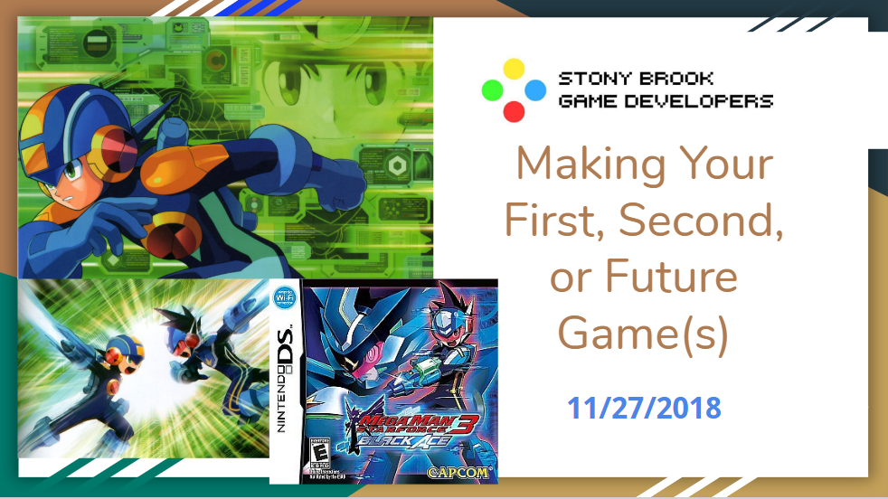
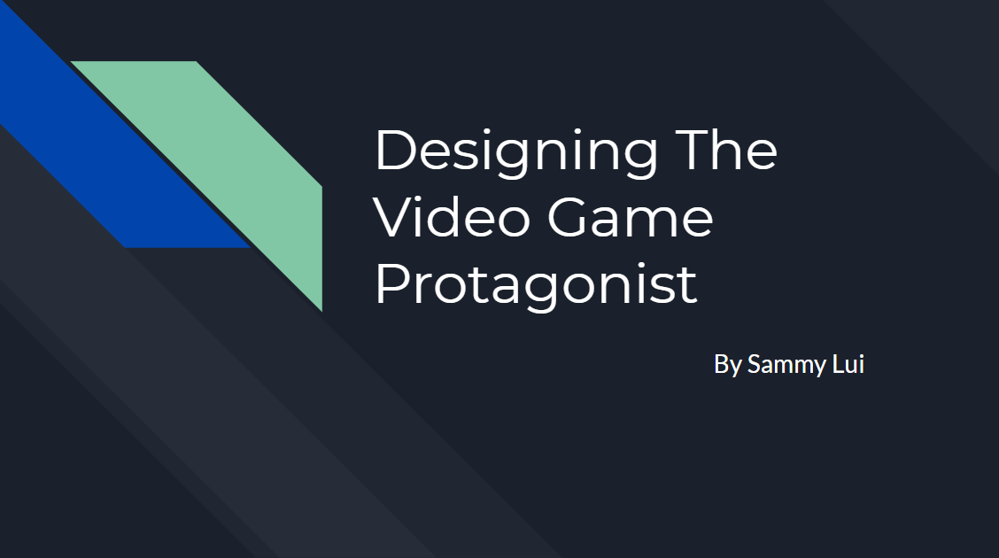
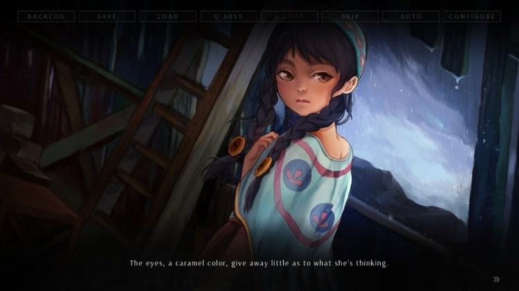

Timeline
2018

Hosted by Peter Ly, Peter discusses the intricacies of designing game sequels and game series. In this meeting, Peter discussed the concepts of retooling main gameplay mechanics in sequels, diverging from main mechanics in sequels and using other games in the same genre to make innovative, new ideas. In his presentation he uses the games Megaman, Pokemon, Fire Emblem, X-COM and Flamberge that are part of a series as examples of games that innovate and improve on previous games in their series. Specifically how games like Megaman include new gameplay elements each game to bring in new ideas as well as bring in new challenges, how games like Pokemon include new gameplay elements and mechanics to change to add to and change competitive gameplay, and how games like Flamberge are based on previous games in the Real Time Strategy genre but diverged from them and became very unique and different.

Learn the basic necessities and bare bones of designing an iconic video game protagonist with 9 steps. Hosted by guest speaker Sammy Lui, Sam demonstrated the 9 steps of designing video game protagonists, finding character inspiration, designing the character's story and appearance, shape usage, figure and posing, the use of silhouettes, the significance of complex designs, importance of accessories, creating color combinations and using textures. He demonstrated the steps that can be taken from developing a character description to a character design and vice versa. He deconstructed the design intricacies of the protagonist of the game Persona 5 to demonstrate how character design elements can be derived from a story and how a story can inspire character design elements and the design process. Afterwards, he held 2 drawing exercises with the club. The first exercise was to sketch Sonic The Hedgehog using the 9 steps he discussed and the second was to design an original character using the 9 steps and a genre in mind.

Tom Rothamel, a former alum of Stony Brook and creator and manager of the video game company Ren'Py, demonstrated his visual novel game engine, Ren'Py. Tom discussed the process of creating his game engine and the types of games that can be made on it. He also showcased several games he made on his engine, Highway Blossoms, SC2VN, and Over The Hills And Far Away and demonstrated how to use his engine. Afterwards, he discussed his time in the game industry and how he started his own company.

2/3